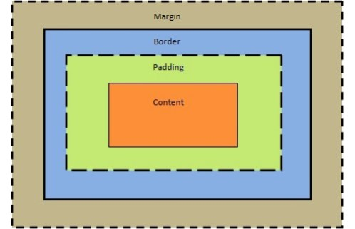

This website will clearly explain How to HTML. It will inclued: How HTML files access CSS, explaining the features of the box model and clearly show the fundamentals of scripting languages
CSS means Cascading style sheets, this is a web language that is used in order to create a website layout. It is mainly used for formatting a documents elements this includes its layout, fonts and colours.
CSS usually only allows the user to do one thing at a time, this will make the user focus on the appearance and the structure. CSS also reduces file size, clutter and the load time of web pages.
If CSS is not used it can slow down the web page, this occurs due to the amount of code that would be required to run the page. The user won't know every line of code so using CSS will be less likely to confuse them as they won't be looking at thousands lines of code that have different functions. All the lines of code will be ordered and organised making it simpler and straightforward to load and use.
1.Inline - By using the style features found in HTML elements.
2. Internal - Using the style element in the head section.
3. External - By using an external CSS file.
The contents is the place on the webpage where all the information is added. This consists of paragraphs and lists. Image tags can also be added and it will find the image file from the reference of the tag and will be clearly presented on the webpage. If the information isn't added to the content then it will not show up on the webpage.
Padding is used as a filler to ensure there is space between the content and the border. The padding is transparent meaning if the background has a colour it will not affect it by blocking sections out. Padding can be added to different parts of the content, an example of this would be:padding-right:10px;padding-top:10pxThese lines of code show the size and the thickness of the padding that will be used on the webpage.
The border allows the user to change the style, colour and size of the contents which is visible on the webpage. An example of a border would be:p {border: 5px solid red;}This line of code clearly shows that it will be a solid red border. This line of code can be customised to the user preference as they can change the colour, style and thickness of the border.
The main type of scripting language is commonly known as JavaScript, it is an open language that anyone is able to use on their websites without a licence. JavaScript is able to interact with the HTML code of a website, allowing the creator to add in any dynamic content to their site. An example of this could be an animation on a web page, once clicked it could take them too another page on the website.
Adding “Var” to a word or number will add a value to it. This is known as a variable. An example of this could be: script Var num= 27 Var name=”aksh” Var sum=num+name script
A FOR Loop is a line of code that will constantly repeat itself until it fulfils its function. A FOR Loop is carried out when the count is less than or equal to five. One the count rises above five it will then move on to the next statement.
A While loop is carried out when a specified condition is true, will repeat a block of code until the condition changes. An example of this would be:var=0:while(i>5){st=st+i+”br”;}